Big Data Expo 2018: Deep Learning, the Engine of the AI Revolution
This post was originally published in the GoDataDriven blog
Two weeks ago I had the opportunity to present a talk about Deep Learning at the Big Data Expo 2018. This was a non-technical talk trying to demystify Deep Learning and explain why Deep Learning is driving the AI tech revolution forward.1
The title of my talk was Deep Learning, the Engine of the AI Revolution, and when I say revolution I don't mean just an advance in technology but a technology that changes society.
This blog post is an attempt to summarize my talk. It's a bit choppy because the talk had a lot of storytelling to link concepts together, but I hope this post still delivers some value for those not present during the talk.2
Tech revolutions
In the late 90s/beginning of the 00s we had the internet revolution where companies like Google, Facebook, Youtube, Netflix, and Airbnb started. We also saw some companies adapt to the internet era and release new products such as MSN Messenger, Hotmail, and the iTunes store.
Then, after the release of the iPhone in 2007, the mobile revolution started. Great wealth was created with users engaging much more with products through mobile applications. Companies like Uber, Tinder, Snapchat, and Instagram were created. Savvy companies from the internet era established dominance by launching mobile applications like Facebook, YouTube, LinkedIn, and Spotify.
The next wave will be the artificial intelligence revolution. AI is ready to create disruptions in different sectors and markets, in some cases, it has driven new products already, like Google Translate or LG Cloi. Technology is changing the customer experience because recently AI has been able to take a stab at problems that relate to human interactions, problems related to text, speech, audio, vision, coordination and understanding of the environment.
Everyone is familiar with the big companies like Google (Waymo) and Tesla, racing to create the perfect self-driving car using AI, and with smart assistants like Alexa, but AI powered by deep learning is also embedded in many other sectors through smaller companies. Take Lyrebird for example, a company based in Canada which can synthesize your voice, or Viecure and MedicX.AI which bring AI to the medical sector, or CaptainAI trying to disrupt the boat and ship industry. There are many more examples, but the wave is clearly coming and my question to you is: is your organization prepared to adapt to this new AI era?
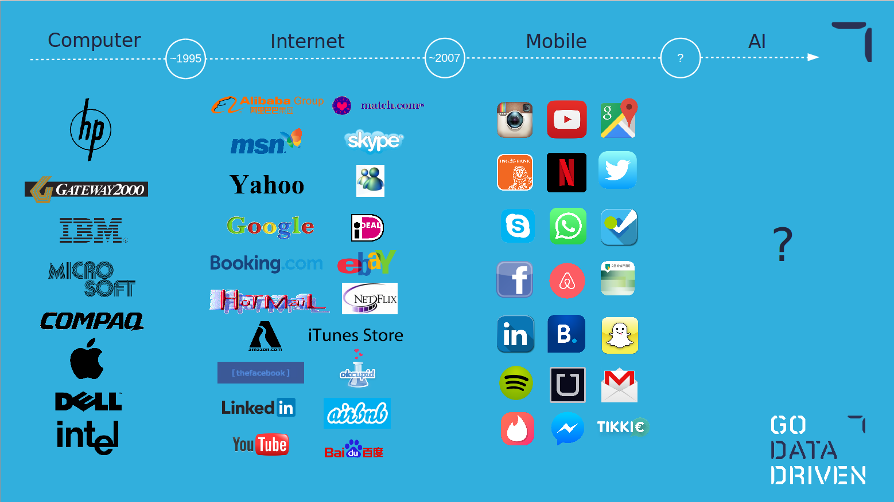
How does deep learning fit in the artificial intelligence ecosystem?
Let's start by looking at the concepts of artificial intelligence, machine learning, and deep learning.
Artificial intelligence as defined by John McCarthy, who coined the term in 1956, is "the science and engineering of making intelligent machines". Notice that there is no specification on how machines mimic intelligence; it can be done through business rules, brute-force algorithms, symbol manipulation, or statistical learning.
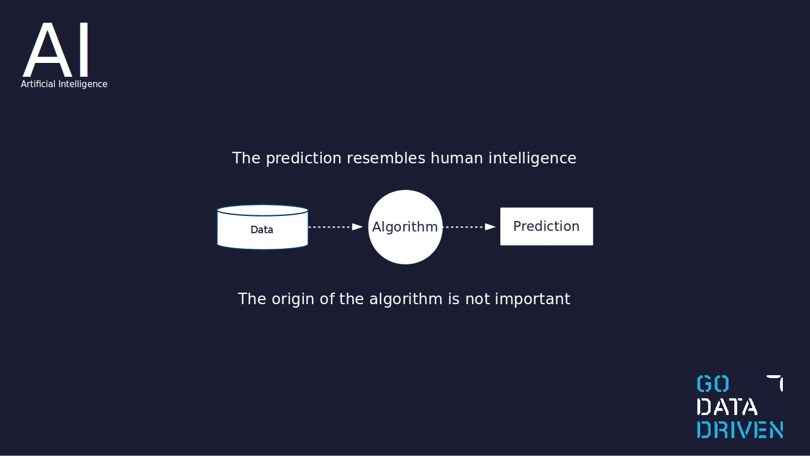
Machine learning is a concept within artificial intelligence. Arthur Samuel defined the term machine learning in 1959 as "the ability to learn without being explicitly programmed". The main idea is that data goes into a learning algorithm and out comes a model which is able to perform predictions given new, as-yet-unseen data.
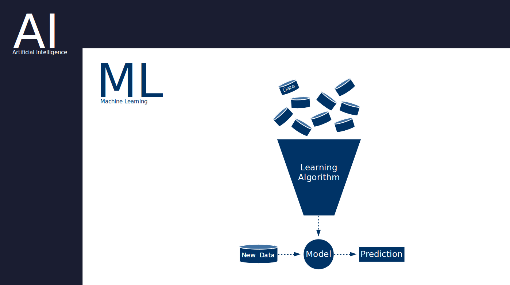
Deep learning is a concept within machine learning and artificial intelligence. It uses machine learning algorithms inspired by the human brain, those containing the concepts of neuron or synapses.
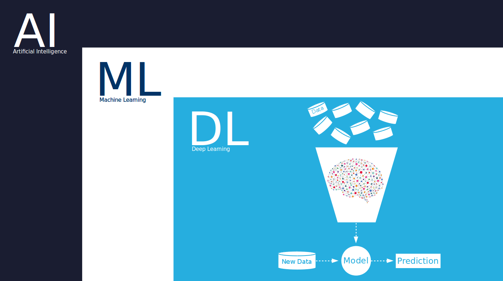
An example of artificial intelligence but not machine learning is a tax calculator for example, which performs a task based on business rules. Another example is the famous Deep Blue which defeated the chess champion Garry Kasparov in 1996 by using an brute-force algorithm.
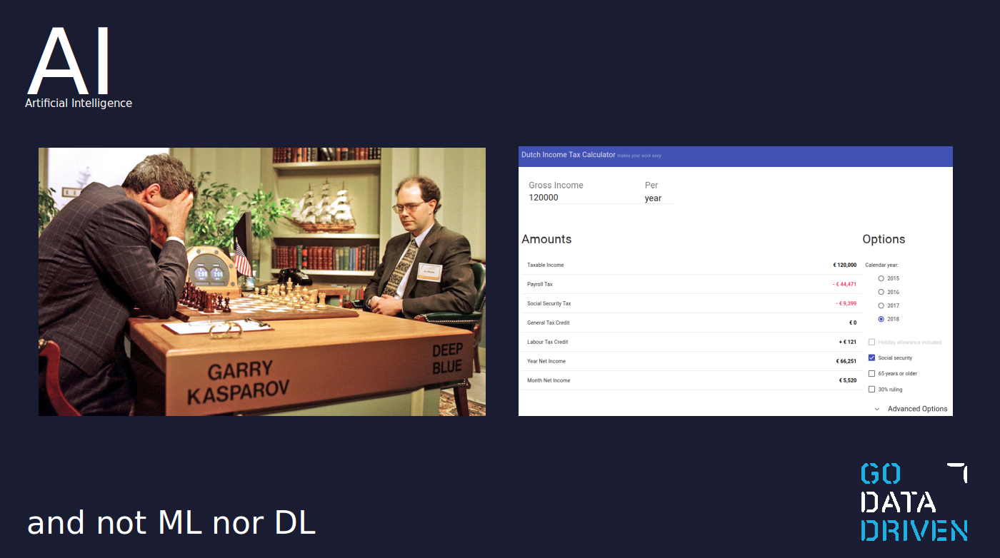
The old approach to solving spam email which was based on the Naive Bayes technique is an example of machine learning and not deep learning; this I'll call traditional machine learning. In summary, this approach counts the number of times a word appears in a corpus of known spam emails and assigns a probability of being spam if a new email contains this word. Another example of traditional machine learning is applying a model (e.g. Random Forest) to a number of engineered features to make predictions (for example, predicting house prices based on floor area, number of rooms, location, etc.)
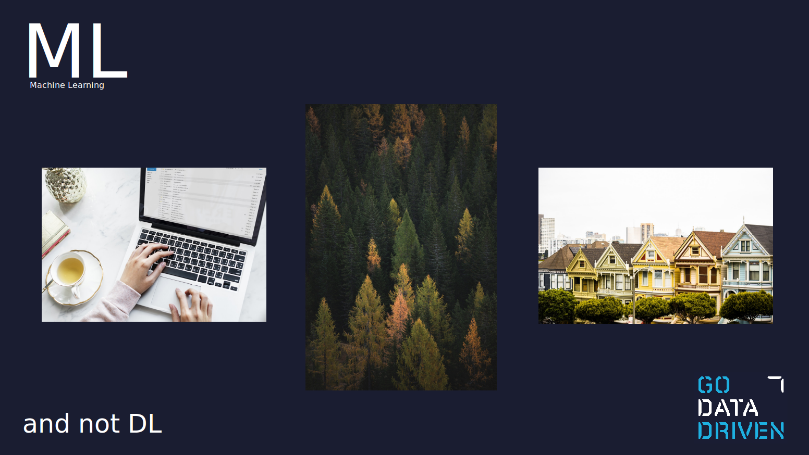
A deep learning example is Smart Reply, which was introduced in Gmail in 2017. Smart Reply is able to understand what is being said in the email and suggest a human-like response which matches the context of the conversation. Another example of deep learning is the identification of the subject in a description or review, or the recent poster boy of deep learning, AlphaGo.
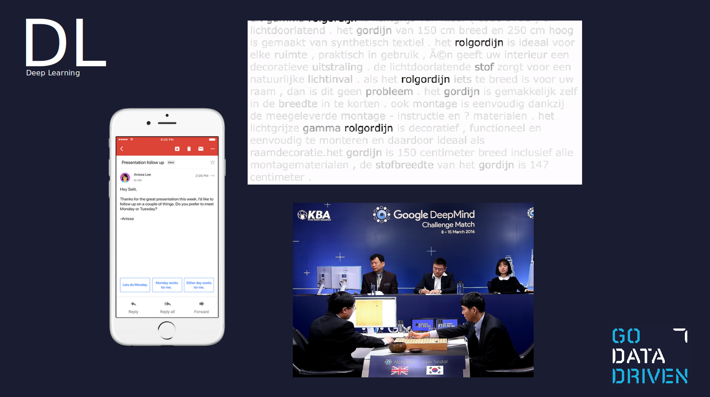
Traditional ML vs deep learning
Traditional machine learning requires the creation of features. This is normally done by a data scientist in collaboration with a domain expert. These features need to be chosen or hardcoded by a human.
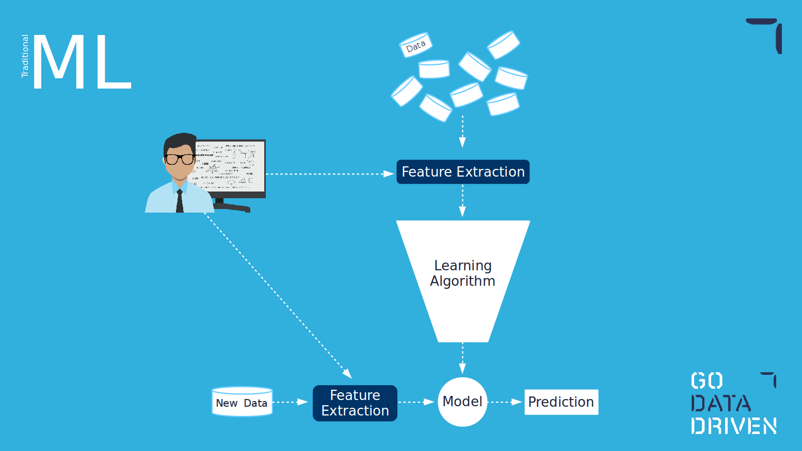
On the other hand, deep learning does not require the creation of human-engineered features. The creation of features happens within the learning algorithm itself. One of the advantages of using deep learning is that for use cases where is not easy to create or identify which features to use; the algorithm will figure them out for you. However, one of the drawbacks is that these features will not necessarily be interpretable by humans, therefore making difficult to explain how the model is working and why itis making certain decisions.3
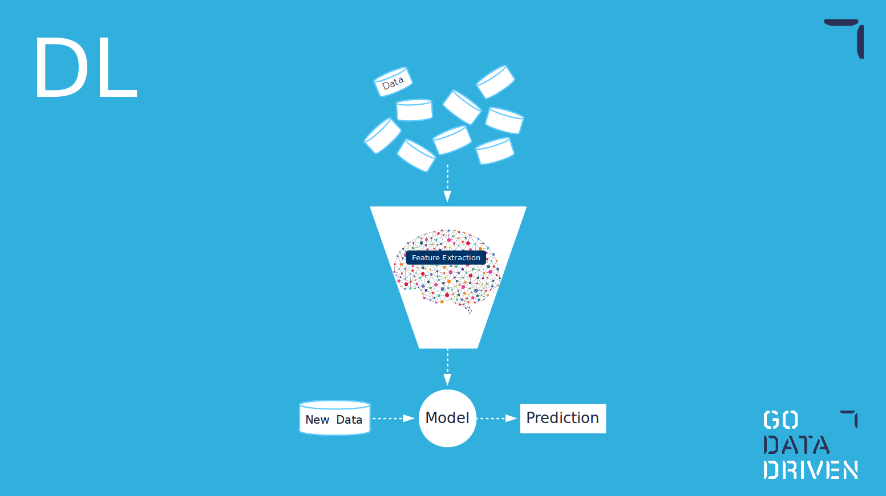
Do you remember the graph below? With the promise of the power of unstructured data, companies have put a lot of effort and resources into setting state-of-the-art environments and data pipelines. Deep learning is the correct tool to use the full capabilities of unstructured data, if you are using traditional machine learning and creating features on top of unstructured data you are basically turning it into structured, kneecapping the potential value of the unstructured data pipelines. As unstructured data becomes dominant, deep learning is a must in the toolbox.
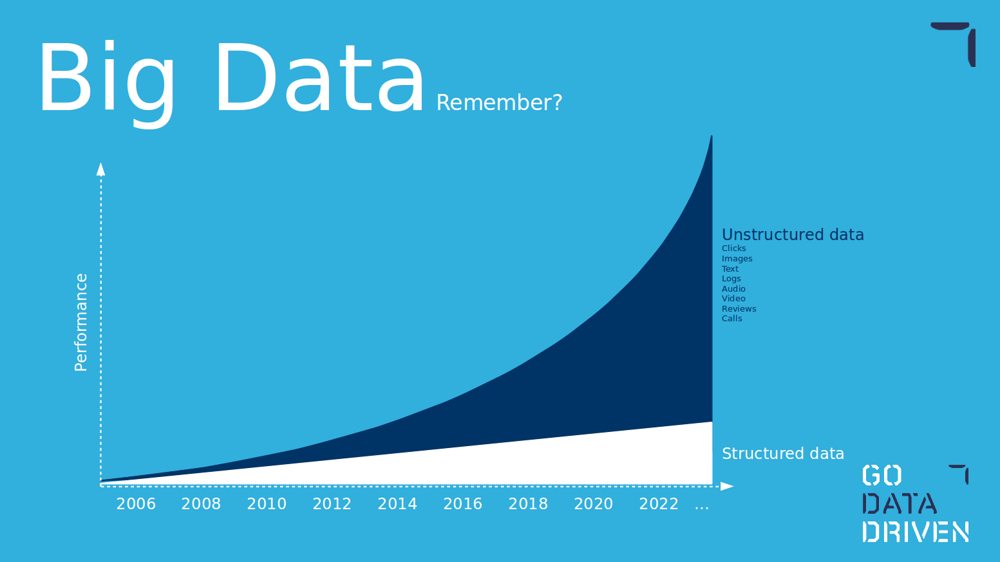
Another advantage of using deep learning models is that, as the amount of data grows, the models keep on learning and are able to capture more complex relations within the data.
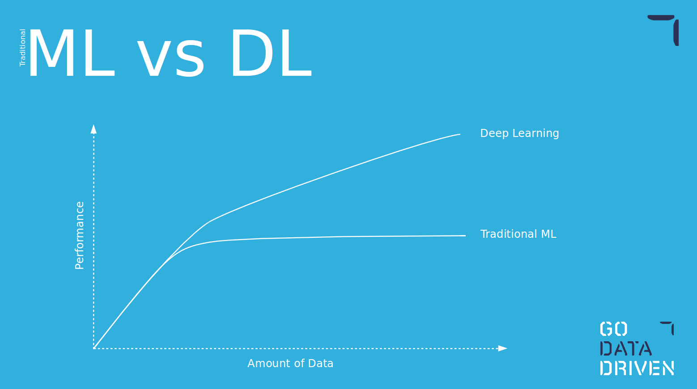
DL ecosystem
Supervised learning is probably the most well-known topic within machine learning and it relates to having a labeled dataset to train on. Semi-supervised learning as the name indicates relates to the situation when we have only part of our dataset labeled. Unsupervised learning is then when the complete dataset has no labels, and most of the time the task is not so much to predict something but to find relations in our data by modeling the probability distribution of the data.
Transfer learning, in my opinion, is one of the most useful types of techniques for a common project or business. Transfer learning consists of solving a problem and using the knowledge acquired to solve a different problem. These problems can differ on the dataset, for example, training a model to solve a problem with an abundant public dataset and then solving the same problem but with a smaller dataset which belongs to your use case. It can also be the same dataset but two different tasks, and instead of solving the tasks separately the algorithm uses the knowledge from solving one into the other. Transfer learning, in essence, gives a head start to solve a problem.
Deep reinforcement learning is a very particular type of technique. It consists of learning a task by trying it many times and learning from failed and successful trials. The approach is similar to how a child learns to drive a bike, the exact instructions are so complex that the only way to learn is to try it. The use cases for deep reinforcement learning require simulators most of the time since it is costly to perform many failed trails.4 I personally know of only a few actual business cases for deep reinforcement learning, but it is a very hot topic at the moment and certainly state-of-the-art.
Meta learning, also known as "learning to learn", studies a human's ability to learn new tasks. This is a concept closely related to the holy grail of AI: artificial general intelligence (AGI). Meta learning tries to develop models that achieve intelligence across many different problem domains.
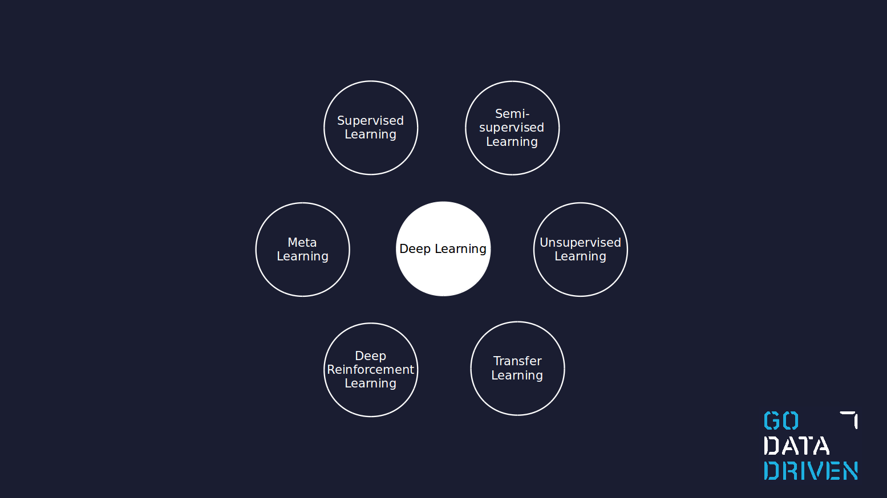
Within deep learning there are already many tools available, some of them developed for a specific type of data or a specific use case. The image below illustrates a few, but there are many more and their number is growing. There is the need for deep learning experts that know which tools fit your use case and to know how to tune them to achieve their peak performance.
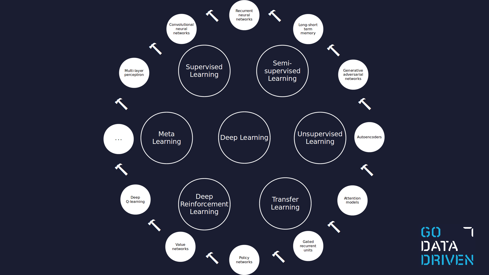
The business cases are currently driven mostly by supervised learning, with transfer learning becoming very important for companies without the resources and technical expertise of the tech giants. Even though the figure below was presented by Andrew Ng in 2016, it still gives a clear picture of where artificial intelligence stands in industry at the moment.
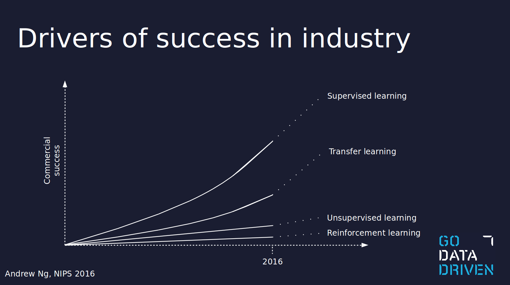
Just start
It is said that to start a deep learning project you need a huge amount of data...this is not necessarily true! If you have an idea for an AI company or project remember that you don't need to hit a homerun at the start. There is a positive feedback loop embedded in any AI project development. For example, with the use of transfer learning, you can already develop a minimum viable product with a small quantity of data, and as your idea gets adopted and user data flows in, you can make an increasingly better model.
A good example of this is Blue River, which started training models using pictures they were taking from their smartphones. Blue River was recently sold for 300 million to John Deer.
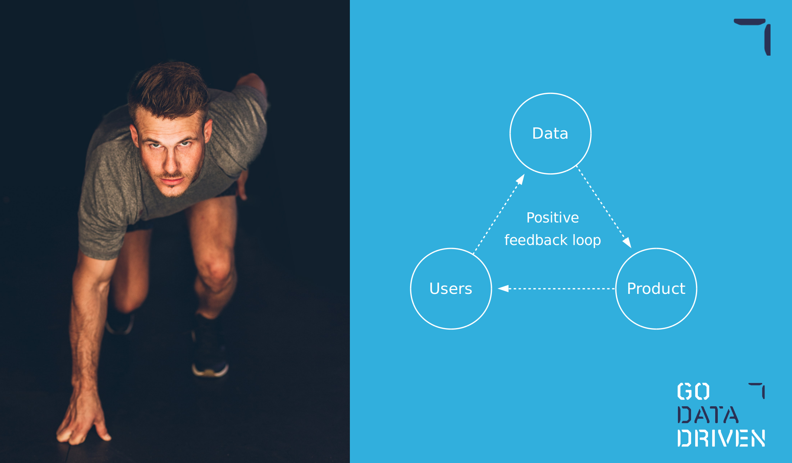
The competition for AI dominance
Finally, I want to point out there is a war out there, with many of the leading countries heavily investing in AI research centers or AI entrepreneurship, boosting the AI industry in their countries but also trying to retain AI and deep learning talent. I personally live in The Netherlands and I'm sometimes disappointed with the country's lack of vision for an AI-based future. I talk to AI startups here with great ideas which do so much with so little resources, and when I go to San Francisco and see the huge difference in investment it is obvious to me who will end on top. I encourage government, venture capitalists, companies and investors from The Netherlands to take a serious view on the AI situation around the globe.
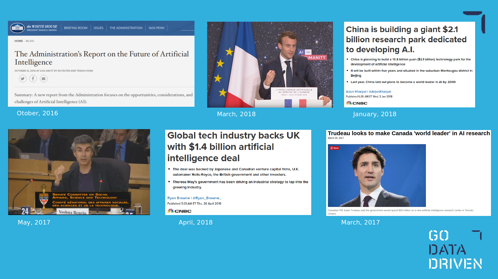
Find the complete slides in here.
-
Big Data Expo is a two-day conference in The Netherlands running for several years with an attendance of around 5000 visitors, and best of all it is free! I would say that the conference is business-oriented, with a focus on use cases, inspirational talks and the future for Big Data and AI in business. ↩
-
Great efforts are currently being made to solve this problem. If you're interested, search for the topic "distillation of deep learning" models. ↩
-
Think of self-driving cars, you don't want to crash a car with every failed trial! ↩